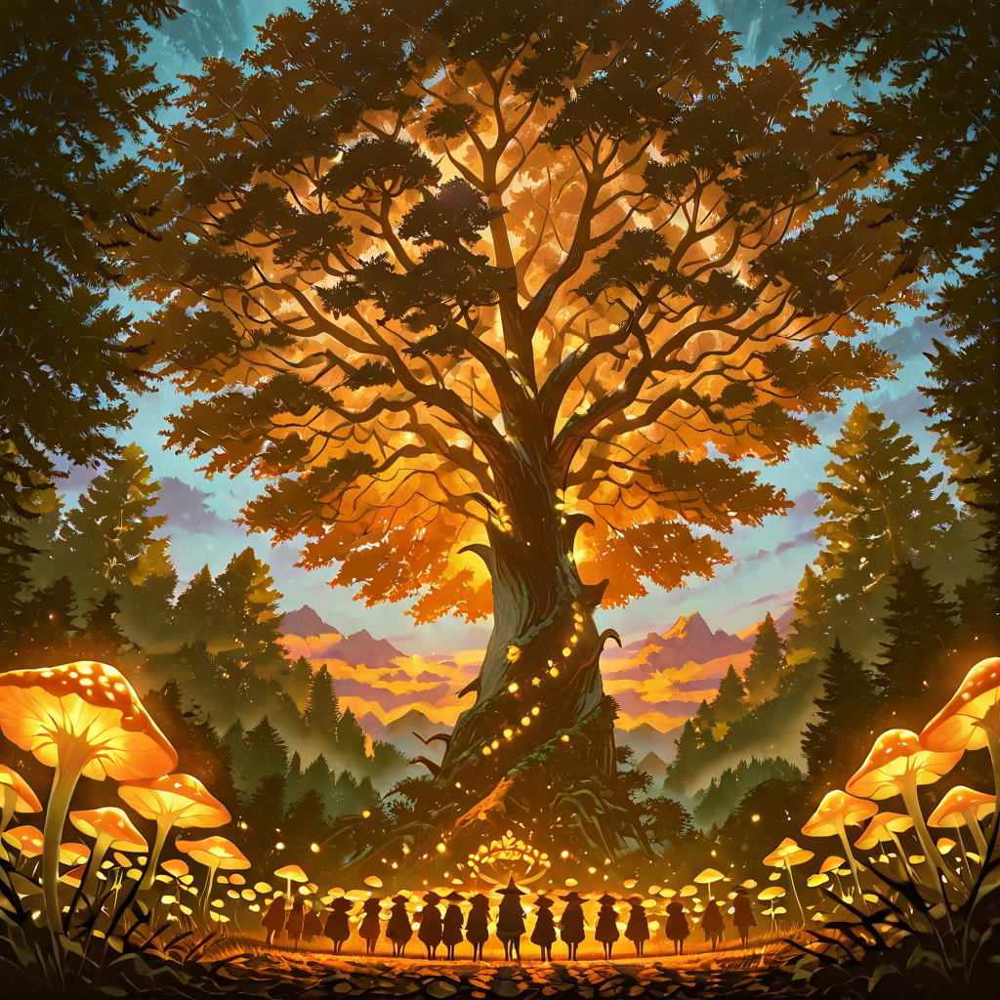
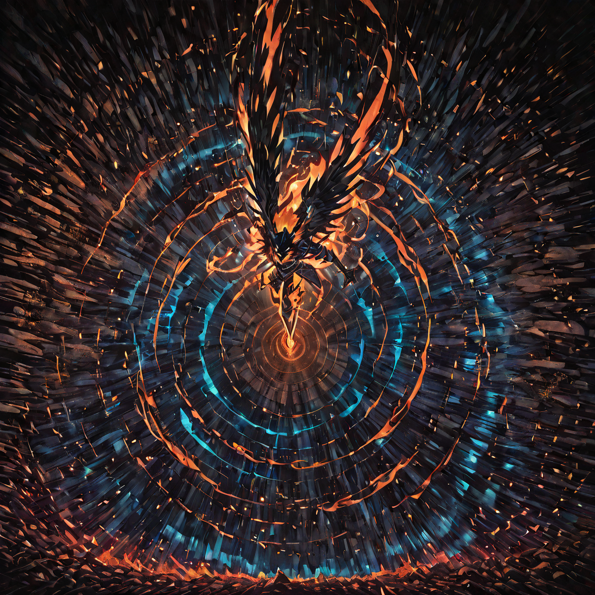
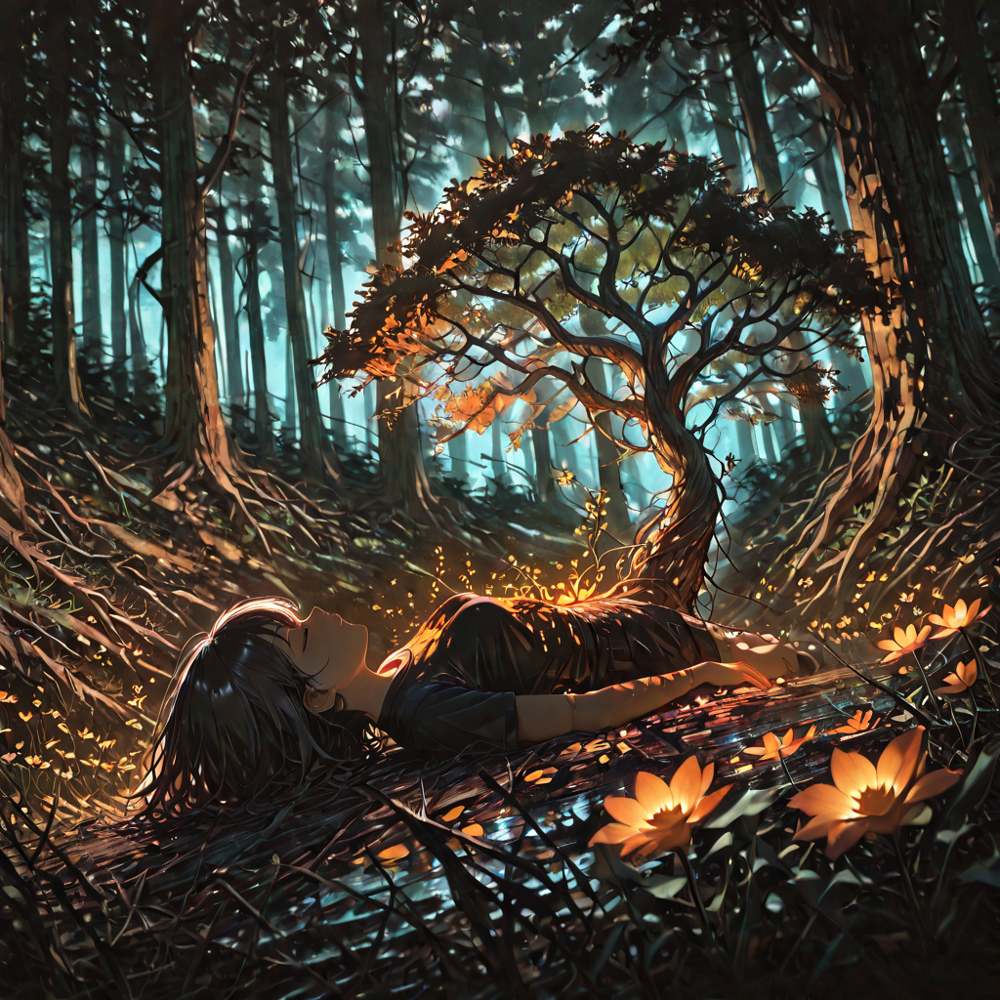
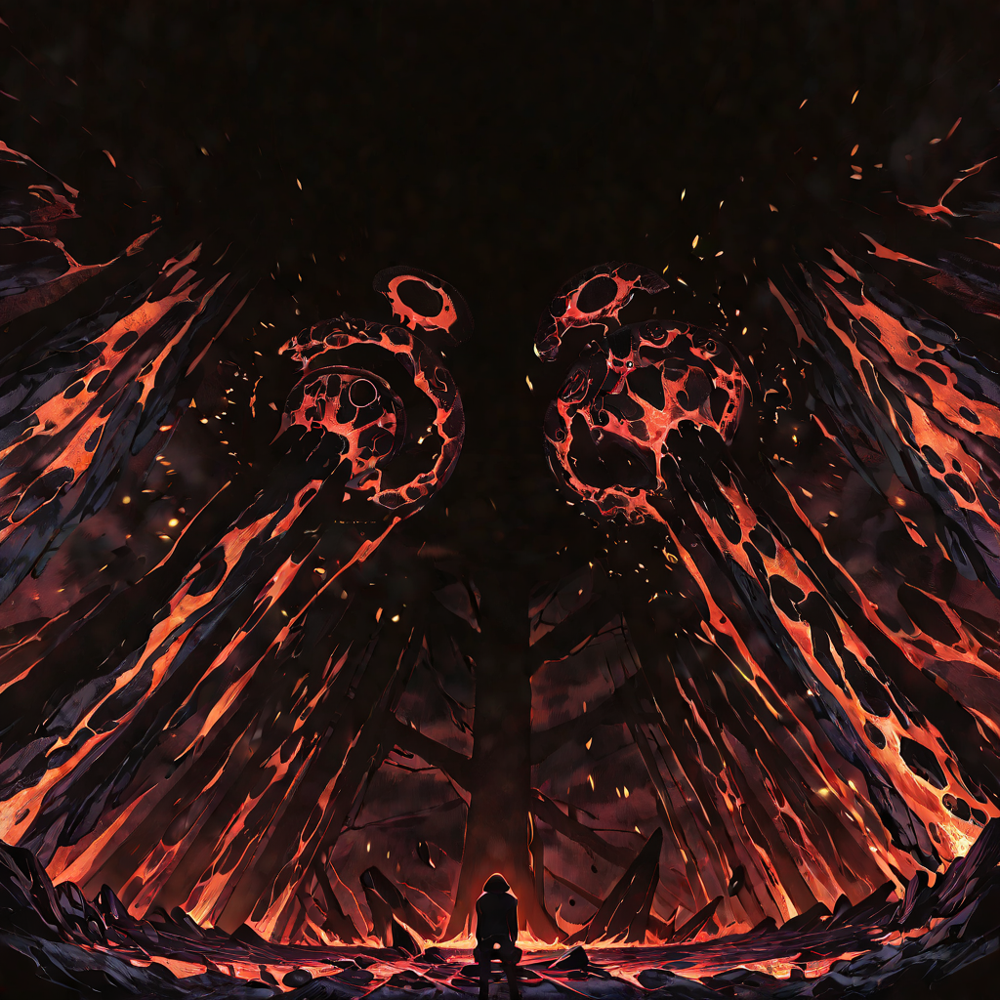

A society where beast-kin and flora-spirits breathe the same ancient air, governed not by law or hierarchy, but by the shared and absolute imperative of the living world: grow, adapt, endure.

Hunt and Root
Life in the Coalition does not follow the rhythm of the sun and moon , it follows the rhythm of hunger and growth. The great hunts happen at dawn, when scent is strongest and prey is slowest to wake. The deep root-work of the Spore-Risen happens at midnight, when the soil's own energies flow upward and the bioluminescent fungi light the forest floor like an inverted sky.
The Hunt Cycle: Every ten days, the Apex Predator clans engage in a collective hunt. Not for sport , for communion. The kill is shared down to the smallest member of the group. Those who cannot hunt contribute by tracking, herding, or preparing the ritual grounds. No one eats alone. The act of feeding together is considered a sacred affirmation of the Coalition's bond.
The Root Vigil: During the same ten-day cycle, the Echoes observe one night of complete stillness , roots extended deep into the earth, processing the planet's energy pulse, reading the health of the soil, monitoring for external threats or underground shifts. What they learn is communicated to the Apex Predators through a complex biochemical signal language: specific spore releases that produce instinctive emotional responses in the beast-kin, bypassing the need for words.
Identity and the Trial of Form
In the Coalition, identity is not given , it is forged through the Trial of Form. Every young member, regardless of whether they are beast-kin or flora-spirit, undergoes a solitary period of three days and three nights in the volcanic pools at the base of the Obsidian Peaks. Without weapons. Without guidance. Without water from any source other than what the mountain provides.
What emerges is not merely tested , it is changed. The volcanic mineral compounds begin the bio-obsidian process, leaving permanent marks: crystalline patterns on the skin or bark of the initiate, unique to each individual, that serve as both identification and a living record of their development. Every new layer of bio-obsidian added in later life traces over these original marks, building a cumulative armor that is simultaneously a life story.
Those who cannot complete the Trial are not shamed. They are given a different role , keepers of memory, caretakers of the young, interpreters of the world-pulse. Every function within the Great Cycle has its own dignity. The Trial merely reveals which function each individual is built for.

Leadership and the Flame Council
Khora does not rule by decree. She rules by demonstrated truth. Every decision affecting the whole Coalition is presented before the Flame Council , a gathering of the strongest Apex Predator clan leaders and the eldest Echo druids. Khora presides, but she does not dominate. She listens. She synthesizes. She identifies the path the Cycle demands, and then she walks it first.
Leadership in the Coalition is entirely merit-based, but merit is not measured in victories. It is measured in how well you understand the Cycle. A commander who wins a battle by sacrificing the forest around them will be stripped of rank. A scout who loses a skirmish but successfully identifies a threat that preserves a breeding territory will be promoted. The question is never "did you win?" , it is "did the Cycle benefit?"
Disputes within the Coalition are resolved through the Marking Rite: two parties state their case before the Council, and the eldest Echo present reads the bio-chemical signatures of their speech , emotional honesty, physiological stress, the involuntary scent markers that cannot be faked. The Cycle does not reward deception; the forest always knows what is true.

The Four Pillars of the Great Cycle
There is no written law in the Coalition. But every member, from the youngest kit-kin to the oldest root-elder, knows the Four Pillars , not as rules to be obeyed, but as truths to be lived:

Territory and Exchange
The Coalition does not use currency. Territory itself is the medium of exchange, and the currency of reputation is measured in Cycle Debt and Cycle Credit , an entirely oral and biochemical accounting system maintained by the Echoes.
When a clan hunts in another clan's territory, they owe a portion of the kill, a season of patrol duty, or a specific service to the territory's holders. When a Spore-Risen cures a Felid warrior's wound, the Felid clan owes protection for the druid's grove for the next moon cycle. Nothing is free. Nothing is charity. Everything is an exchange within the organism of the Coalition , the same way a heart does not breathe for free; it pumps blood so the lungs can breathe for it.
Outsiders wishing to trade with the Coalition must present themselves at the Ember Gate , a volcanic archway at the forest's edge guarded by bio-obsidian warriors , and make an offering. Not of gold, but of useful information or living things: seeds of plants not native to the territory, intelligence on movements of external threats, or , most valued , the coordinates of territory that was once taken from the Cycle and can be reclaimed.